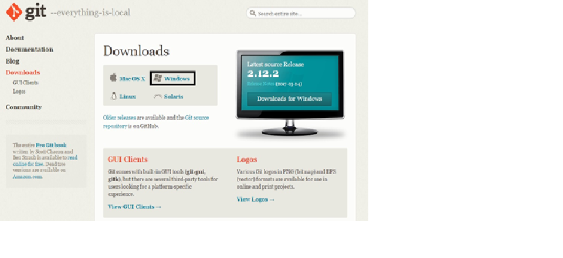
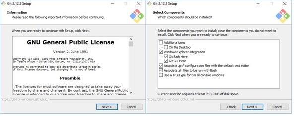
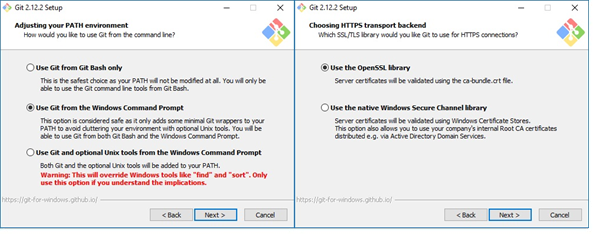
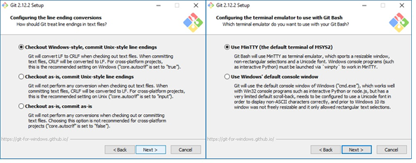

OVI DISEÑOS WEB
UNAD

LECTURAS
Lectura 2
SISTEMA DE CONTROL DE VERSIONES GIT
GIT es un sistema de control de versiones creado por Linus Torvalds en el año 2005. Un sistema de control de versiones es un programa que nos permite almacenar tolos los cambios que hagamos a uno o varios archivos, de esta forma podemos tener un registro de todas las modificaciones que sufran estos archivos y así en caso de algún error poder regresar a una versión anterior.
Instalando git
Para instalar git lo primero que debemos hacer es ir a la pagina oficial, a la cual dejamos un enlace en el apartado de descargas que encontraran en el inicio y descargar el instalador según su sistema operativo, en nuestro caso descargaremos la versión para Windows, pero también puedes descargar git para Mac OS X, Linux y Solaris.

Capturado de git-scm.com
Una ves descargado ejecutamos el instalador, este nos pedirá permisos de administrador, se los concedemos y nos aparecerán las siguientes dos ventanas a las cuales damos en siguiente

A continuación, nos preguntara con que línea de comandos queremos manejar git, podemos elegir GIT bash, el CMD de Windows y GIT bash con algunas características de CMD de Windows. En nuestro caso dejaremos el que viene por defecto y pulsamos siguiente enseguida nos preguntara porque librerías de certificados de seguridad queremos usar, dándonos dos opciones las OpenSSL y las nativas de Windows, seleccionamos la que deseemos usar y damos a siguiente.

continuación nos enseñara dos pantallas más de personalización de la línea de comandos, como en lugar de la línea de comandos vamos a usar la interfaz de usuario de GITHUB dejaremos los valores por defecto.

Finalmente nos aparece la opción install, damos clic en esta y esperamos a que termine de instalar GIT en nuestro equipo Una ves terminada la instalación nos dará la opción de ejecutar GIT bash y de ver las notas de la versión, damos clic en finalizar y habremos terminado.